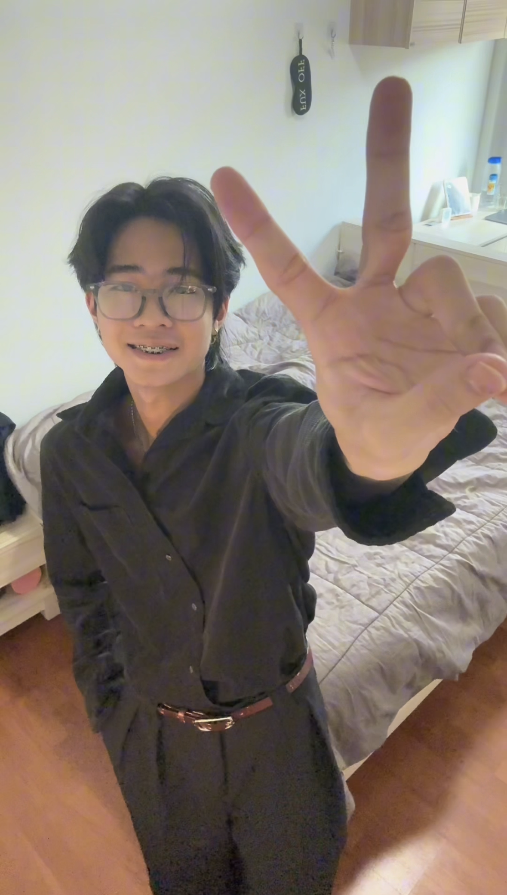

ประวัติส่วนตัว

ชื่อ:ไทยเดิม นามสกุล:ธีระโรจนพงษ์ ชื่อเล่น:เดิม
วัน/เดือน/ปีเกิด:5/5/2550
หมู่เลือด:B
เชื้อชาติ:ไทย
สัญชาติ:ไทย
ศาสนา:พุธ
ที่อยู่:ซ.01กาญจนาภิเษก44 จังหวัดกรุงเทพมหานคร, 10250
งานอดิเรก:เล่นเกม กีฬา
ความสามารถพิเศษ:กีต้า ดนตรี
Gmail:thaiderm.theerarotjanaphong@gmail.com
เบอร์โทร:061-413-9146
ปัจจุบันกำลังศึกษาอยู่ชั้นปีที่ 1 คณะวิทยาศาสตร์ สาขา วิทยาการคอมพิวเตอร์
ผมมีความสนใจในการพัฒนาทักษะด้าน Coding เพื่อเตรียมตัวเป็น Software Engineer ในอนาคต
สถาบันการศึกษา: มหาวิทยาลัยศรีนครินทรวิโรฒ ←กดเพื่อเปิดเว็บมหาวิทยาลัย
สิ่งที่สนใจและกิจวัตรประจำวัน
งานอดิเรก (Hobbies)
- เล่นดนตรี เช่น ร้องเพลง,กีตาร์และเปียนโน
- เล่นกีฬา เช่น บาสเก็ตบอล,วอลเลย์บอล
เป้าหมายในปีนี้
- ฝึกทำโจทย์ LeetCode ให้สม่ำเสมอ
- เรียนรู้ภาษา Python และ Java ให้เชี่ยวชาญ
ตารางกิจกรรมประจำสัปดาห์
| วัน | ช่วงเช้า (09:00 - 12:00) | ช่วงบ่าย (13:00 - 16:00) | ช่วงเย็น (17:00 - 20:00) |
|---|---|---|---|
| จันทร์ | เรียนภาษาJava (CP112) | ว่าง / ทบทวนบทเรียน | ซ้อมดนตรี |
| อังคาร | เรียนเขียนเว็บ (CP151) | ว่าง / ทบทวนบทเรียน | ซ้อมทำโจทย์LeetCode |
| พุธ | SWU195 | SWU196 | เข้ายิม |
ติดต่อสอบถาม
หากต้องการติดต่องาน หรือชวนเล่นดนตรี/กีฬา สามารถกรอกข้อมูลด้านล่างได้เลยครับ